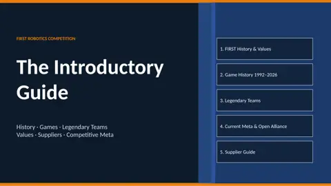
Slides · 38 slides
FRC Introductory Guide
FIRST history and core values, every FRC game from 1992 to 2026, legendary teams, suppliers, and the community tools and training resources worth knowing.
Slide decks, study sheets, games, and handouts I've made for teaching robotics and engineering.
3 slide decks · 42 study sheets · 5 games & quizzes · 4 handouts

Slides · 38 slides
FIRST history and core values, every FRC game from 1992 to 2026, legendary teams, suppliers, and the community tools and training resources worth knowing.
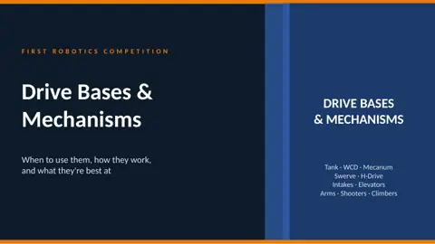
Slides · 16 slides
Tank, West Coast, mecanum, swerve, and H-drive compared, plus intakes, elevators, arms, shooters, and climbers.
Game
Browser game where you drive every FRC drive type (tank, arcade, swerve, holonomic) head to head, with arcade modes and a story-driven career tutorial.
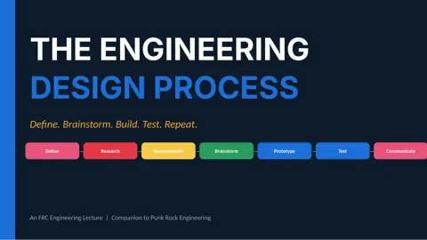
Slides · 12 slides
The seven-step engineering design process, its three iteration loops, and what each loop looks like on an FRC team. Steps adapted from Science Buddies.
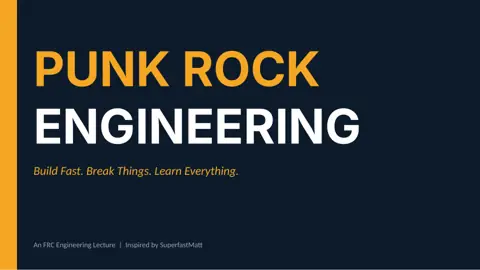
Slides · 13 slides
When to build fast and break things, and when to slow down and apply rigor. Inspired by SuperfastMatt.
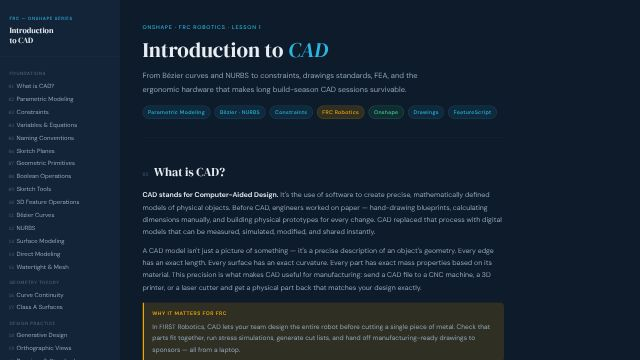
Study sheet + quiz
Parametric modeling, constraints, features, surfaces, drawings, BOMs, FEA, and the CAD software landscape, with a quiz at the end.
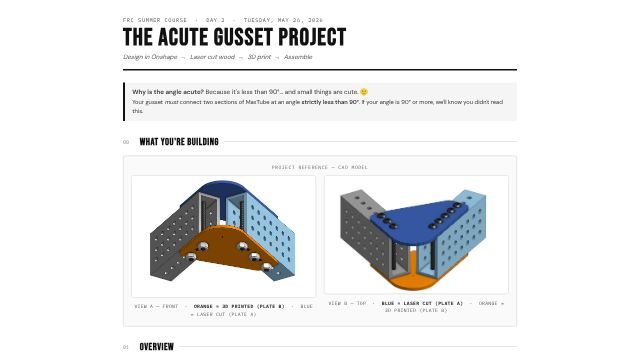
Project handout
Design one gusset in Onshape, then laser cut it in wood and 3D print it. Includes an Onshape checklist and the deliverables.
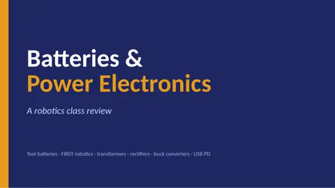
Slides · 22 slides
18650 cells, pack voltages, BMS, why FRC uses AGM lead-acid, transformers, rectifiers, buck converters, and USB PD.
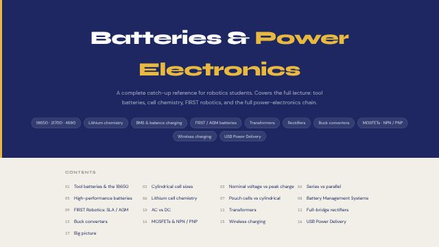
Study sheet
Companion to the Batteries & Power Electronics deck, with a diagram for every topic.
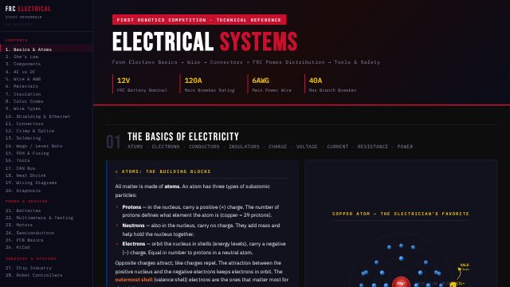
Study sheet
From atoms and Ohm's law to resistors, capacitors, inductors, flyback diodes, and transformers, with practical FRC examples.
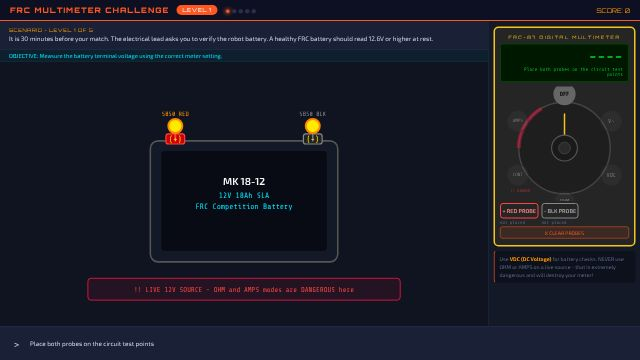
Game
Troubleshoot a robot with a virtual multimeter: find opens and shorts, check the battery, and pick the right meter mode before you fry it.
Game
Jeopardy-style review game on FRC electrical topics, built for a classroom projector.
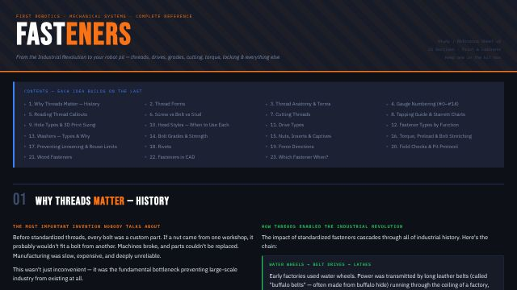
Study sheet
Threads and callouts, tapping and drill charts, head and drive types, grades, torque, loosening, rivets, and which fastener to use when.
Game
Jeopardy-style review game on tools, threads, and thread-locker, built for a classroom projector.
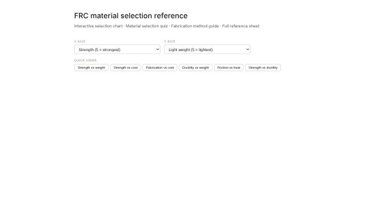
Interactive reference
38 materials compared for FRC use, with a material-selection quiz, a fabrication-method guide, and charts.
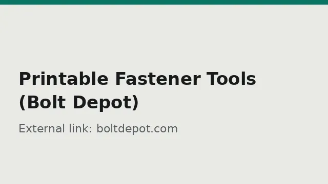
External chart
Bolt Depot's free printable bolt, nut, and thread gauges. Linked rather than rehosted because the charts are Bolt Depot's.
External chart
LittleMachineShop's tap drill chart for inch and metric threads. Linked rather than rehosted because the chart is theirs.
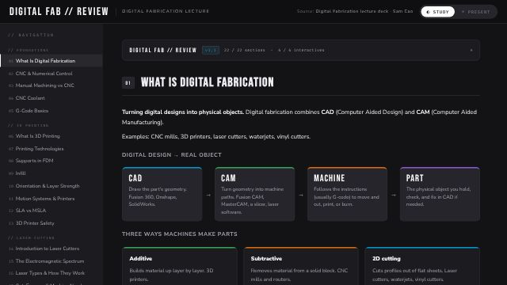
Interactive review
CNC and G-code, 3D printing, infill and layer strength, laser cutters and the EM spectrum, and color as bytes, with interactives and a review quiz.
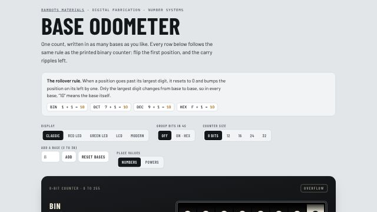
Interactive
Count in binary, decimal, hex, or any base from 2 to 36, from 8 bits up to 32, and see each RGB color channel as one byte.
Study sheet
52-section deep dive on FDM printing: motion systems, extruders, nozzles, cooling, bed adhesion, safety, and a complete materials guide.
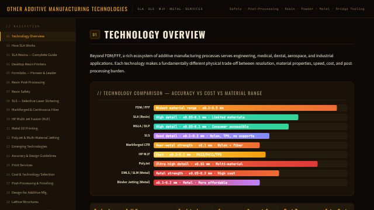
Study sheet
Resin (SLA and MSLA), SLS, HP MJF, Markforged fiber, metal printing, tolerances, print services, and design for additive manufacturing.
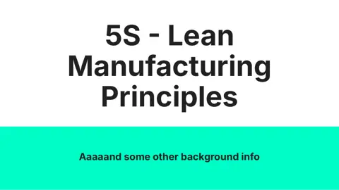
Slides · 14 slides
Kaizen, the five S's (plus safety), and PDCA, with shop-floor examples of each step.
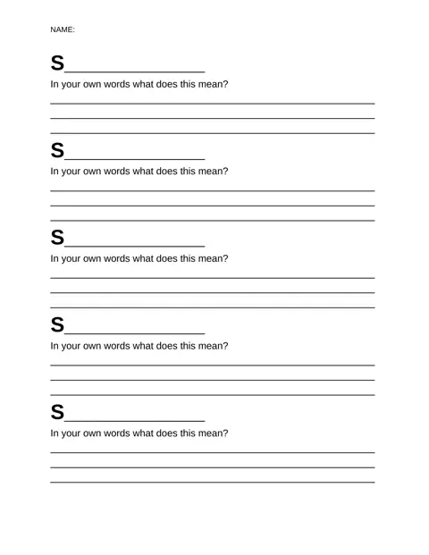
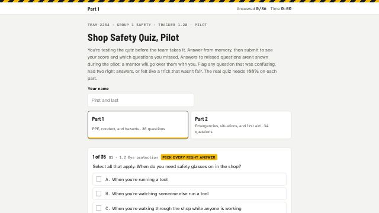
Pilot quiz
Pilot run of the group 1 shop safety quiz: Part 1 (PPE, conduct, hazards) or Part 2 (emergencies and first aid), with a score, missed questions, and a copy-results button.
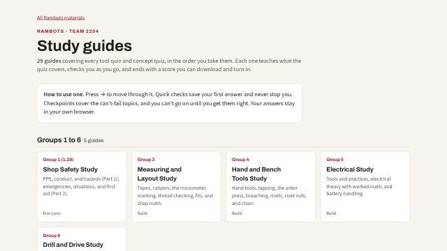
Start here · 29 guides
One page with every tool and concept study guide, grouped in the order you take the quizzes.
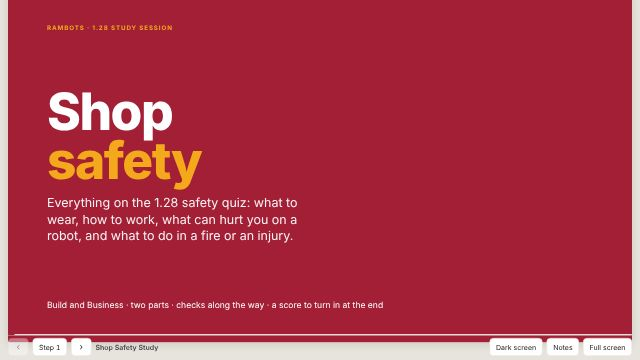
Study guide · Group 1 (1.28)
PPE, conduct, and hazards (Part 1); emergencies, situations, and first aid (Part 2).
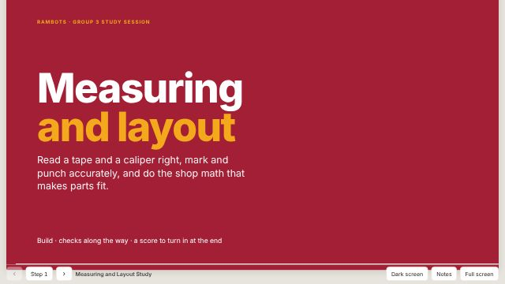
Study guide · Group 3
Tapes, calipers, the micrometer, marking, thread checking, fits, and shop math.
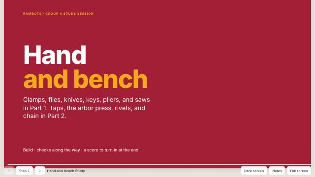
Study guide · Group 4
Hand tools, tapping, the arbor press, broaching, rivets, rivet nuts, and chain.
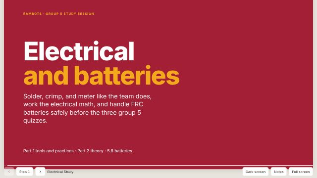
Study guide · Group 5
Tools and practices, electrical theory with worked math, and battery handling.
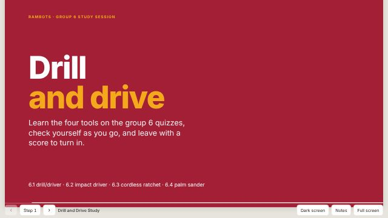
Study guide · Group 6
Drill and driver controls, bits, holes, screws, impacts, sanders, and threadlocker.
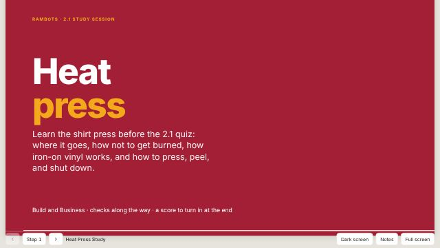
Study guide · 2.1
Setup, the hot platen, mirroring, loading, settings, peeling, and shutting down.
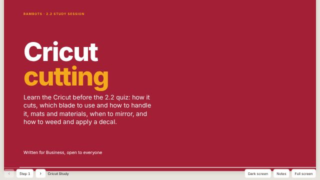
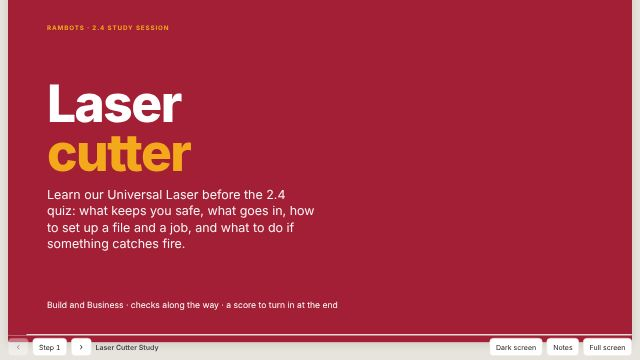
Study guide · 2.4
Approved materials, the BOFA, test cuts, staying with the job, and what to do if it flares.
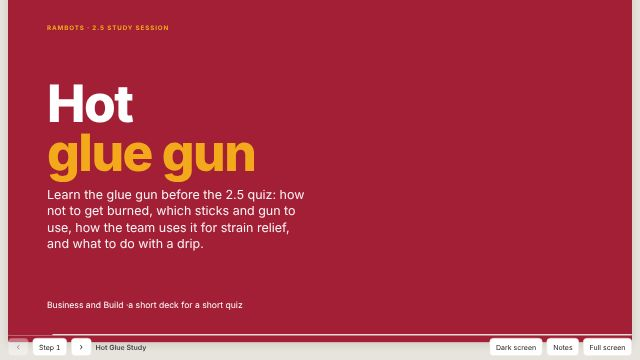
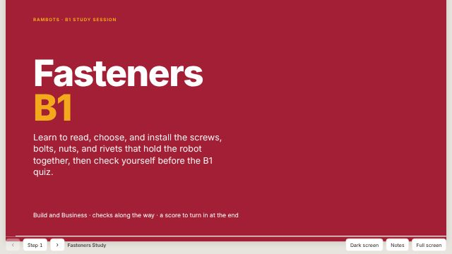
Study guide · B1
Sizes like 10-32, heads and drives, nylocs, threadlocker, rivets, and rivet nuts.
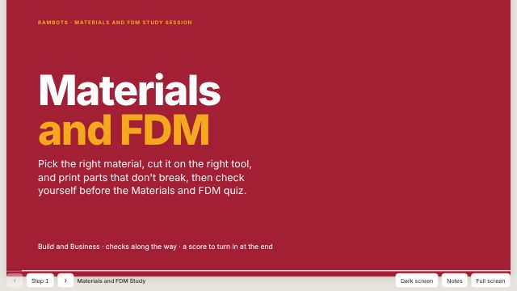
Study guide · Materials and FDM
Aluminum, polycarbonate, wood sheet, and 3D printing filaments and strength.
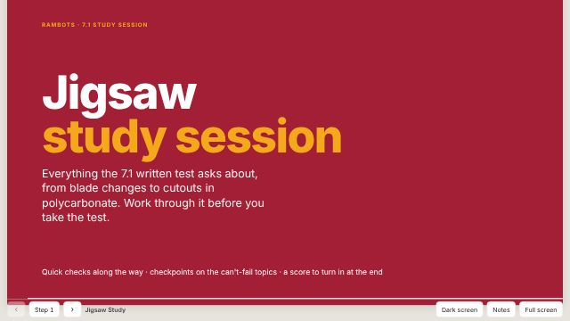
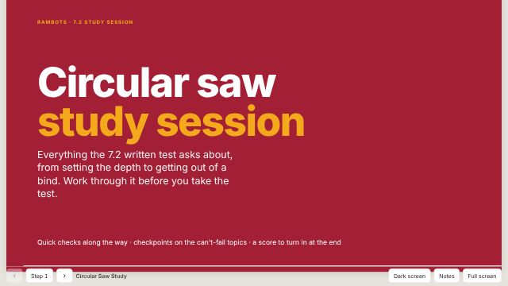
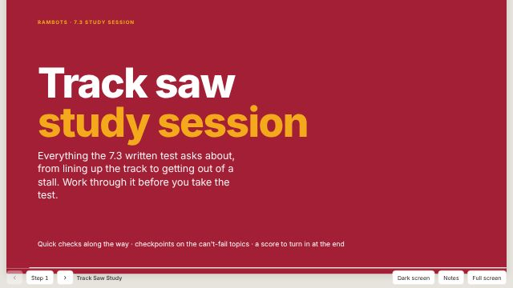
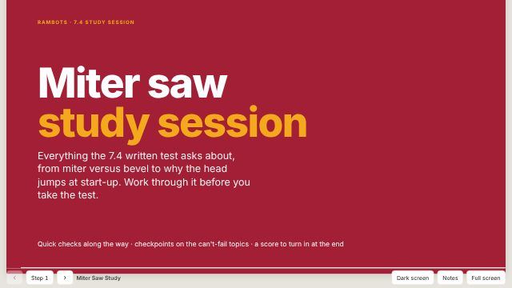
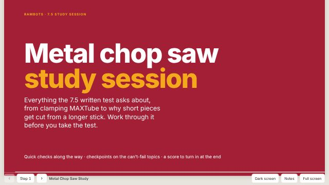
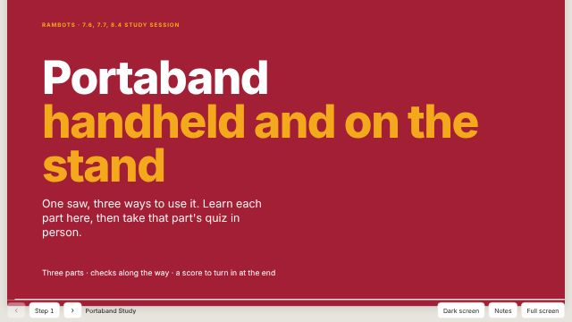
Study guide · 7.6, 7.7, 8.4
Handheld, on the horizontal stand, and on the vertical stand: blades, feeding, stalls, and coasting.
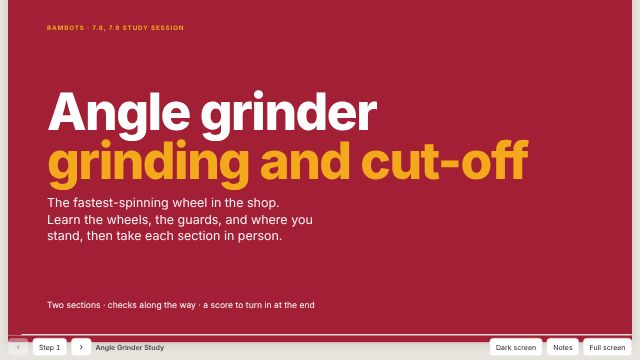
Study guide · 7.8, 7.9
Grinding (Section A) and the cut-off wheel (Section B): guards, grip, binding, and the plane of the wheel.
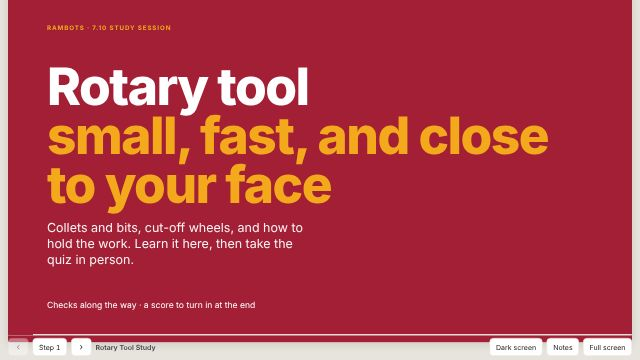
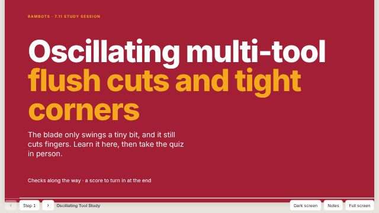
Study guide · 7.11
Blades, plunge and flush cuts, heat, and cutting near the robot.
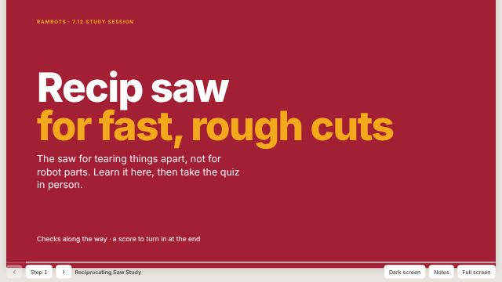
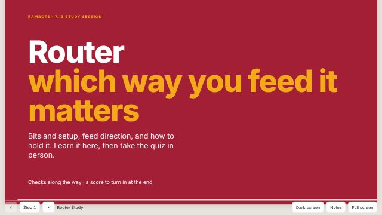
Study guide · 7.13
Bits, collets, depth per pass, and feed direction outside and inside a cutout.
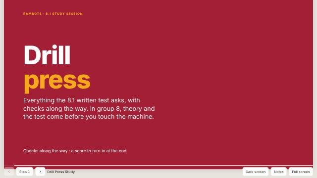
Study guide · 8.1
Clamping, speeds, depth stops, the chuck key, and parts that grab and spin.
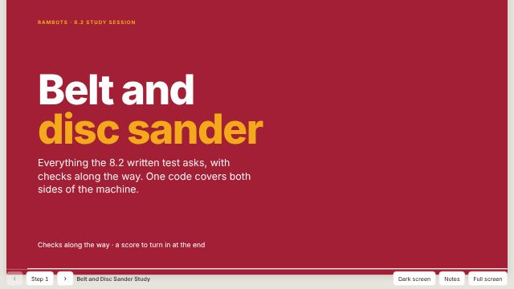
Study guide · 8.2
The down side of the disc, small parts, angles, dust, and coasting.
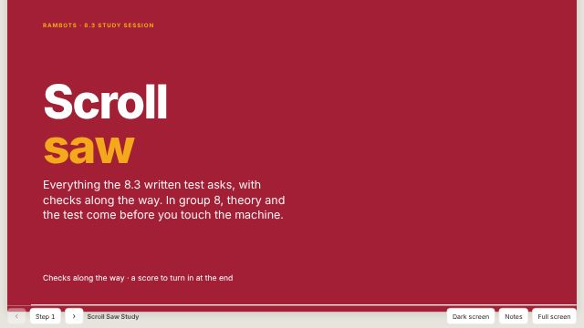
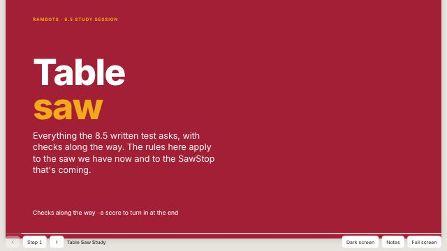
Study guide · 8.5
Kickback, the riving knife, push sticks, blade height, stance, and the fence.
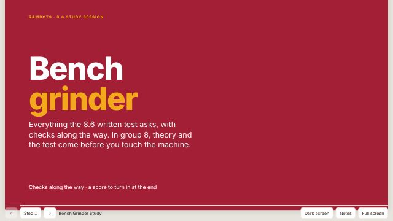
Study guide · 8.6
Rest and tongue gaps, wheel ratings, soft metals, start-up, and heat.
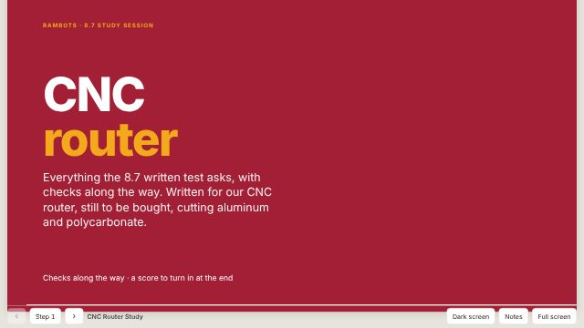
Study guide · 8.7
Zeroing, collets, workholding, the e-stop, dust, and staying with the job.
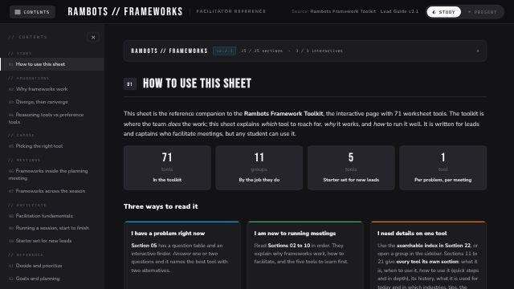
Facilitator guide
A facilitator reference for 71 team frameworks: decisions, planning, root cause, retros, and brainstorming. Each tool has steps, history with sources, FRC examples, a tool finder, and a practice quiz.
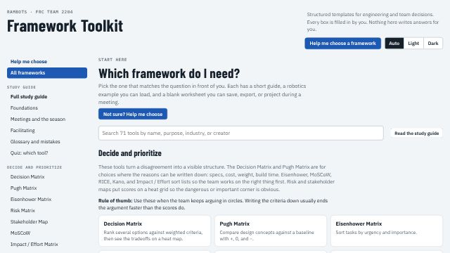
Interactive toolkit
Interactive worksheets for 71 decision, planning, brainstorming, and review frameworks, with a built-in study guide. Fill them in live in meetings, then save, export, or copy each one.
Interactive worksheet
Write one SMART goal for the 2027 season, then break it into 8 pillars and up to 64 small actions on a 9x9 Harada chart. Save it as a Markdown file to turn in, or export a PNG or PDF.
Slides · 28 slides
Choosing a path, what a real job hunt looks like, resumes, LinkedIn, interviews, and salary negotiation.
Handout · 8 pages
Interview questions for engineering roles from intern to quality manager, plus software, embedded, and problem-solving prompts.
Study sheet + interactives
A 66-section reference for new drivers: licensing, how cars work, tires, brakes, maintenance, bad weather, emergencies, buying a car, and insurance, with 11 interactives.
Nothing matches that search.